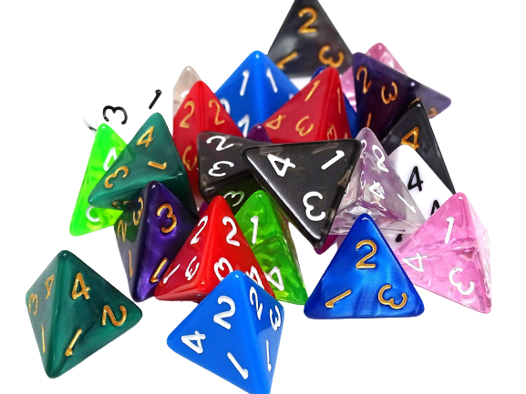
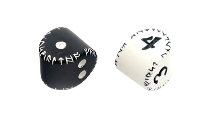

TIRADA DE UN DADO DE 4 CARAS
Todo el mundo sabe lo que es un dado normal de 6 caras y, muy probablemente, muchos de ustedes
ya han jugado miles de partidas en las que se ha utilizado uno (o más). Pero, ¿sabías que hay
diferentes tipos de dados? De entre las innumerables posibilidades, los dados más populares están
incluidos en el juego de dados de Dragones y Mazmorras, que contiene siete dados poliédricos diferentes:
No te preocupes, tenemos en cuenta cada uno de estos dados en nuestra calculadora de probabilidad
de dados. Puedes elegir el que más te guste y, por ejemplo, ¡pretender lanzar cinco dados de 20
caras a la vez! ¿Cómo calcular la probabilidad de las tiradas de dados?

CALCULAR EL DADO
Antes de hacer cualquier cálculo, definamos algunas variables que se utilizan en las fórmulas. n – el
número de dados, s – el número de caras de un dado individual, p – la probabilidad de sacar cualquier valor
de un dado, y P – la probabilidad global para el problema. Existe una relación sencilla: p = 1/s, por lo que
la probabilidad de obtener un 7 en un dado de 10 caras es el doble que en uno de 20 caras.
Sin embargo, también podemos intentar evaluar este problema a mano. Un enfoque es encontrar el número total de sumas
posibles. Con un par de dados regulares, podemos tener 2,3,4,5,6,7,8,9,10,11,12, ¡pero estos resultados no son equivalentes!

CURIOSIDADES
El dado de 4 caras es uno de los más temidos por los roleros debido a que se pierden con facilidad y sueles encontrarlos con el pie.
Es de los dados que más se usan en tiradas complementarias (no principales) en la mayoría de los sistemas.
Existen unos dados de 4 caras que son más agradables para los pies, se conforman por caras redondeadas que no te perforan al pisarlas.
